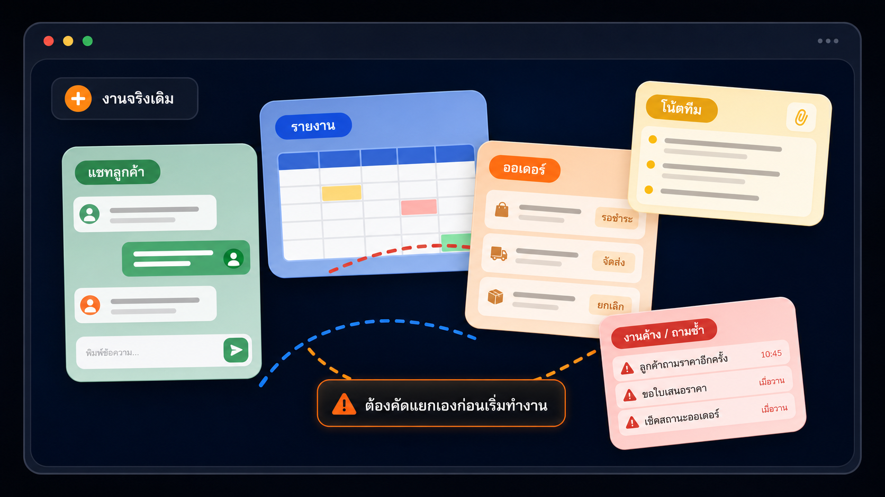
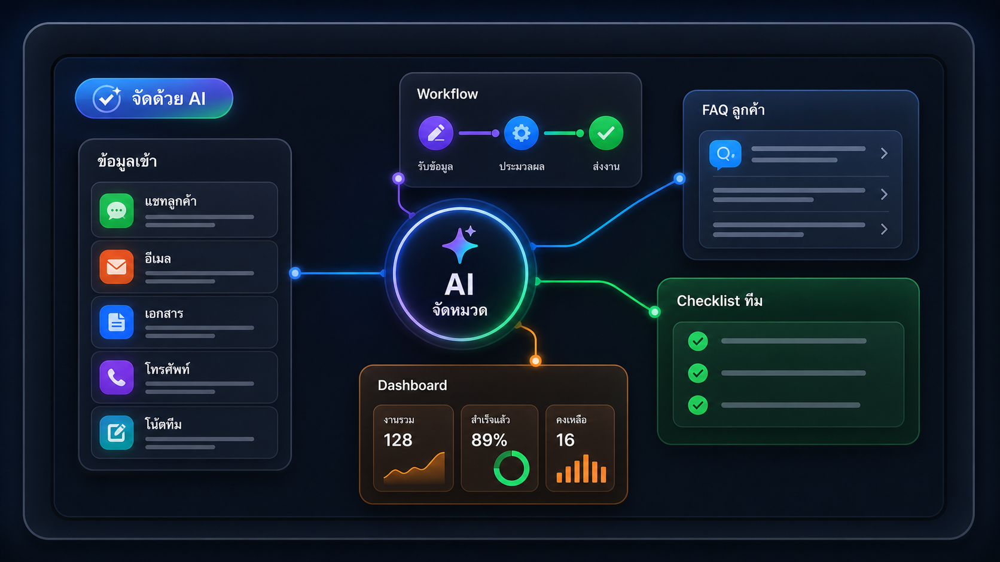

ไม่ต้องเสียเวลาไล่อ่านทุกข่าวหรือทดลองทุกเครื่องมือด้วยตัวเอง
ใช้ AI กับงานจริง ได้อย่างมั่นใจ
AiX Club ช่วยคัดเรื่องที่ควรรู้ อธิบายให้เข้าใจง่าย และพาลงมือจากตัวอย่างใกล้ตัว สมาชิก 1,999 บาทต่อปี พร้อม Live ทุกสัปดาห์ วิดีโอย้อนหลัง และไฟล์พร้อมใช้
เริ่มจากงานของคุณ ไม่ใช่ชื่อเครื่องมือ
เราเลือกเฉพาะเรื่องที่มีผลกับงาน อธิบายด้วยภาษาที่เข้าใจง่าย และจัดทุกอย่างไว้ให้กลับมาใช้ต่อได้
ดูตัวอย่างทีละขั้น แล้วค่อยเลือกวิธีและเครื่องมือที่เหมาะกับงานนั้น
ถามสิ่งที่ติด ดูกรณีใหม่ และเห็นวิธีคิดก่อนนำกลับไปลองกับงานจริง
เปิดดูย้อนหลัง หยิบแม่แบบไปใช้ และทบทวนอีกครั้งเมื่องานเปลี่ยน
เรื่อง AI ที่ดูยาก กลายเป็นขั้นตอนที่ทีม เข้าใจได้ เริ่มทำได้ ใช้ร่วมกันได้ พัฒนาต่อได้
ทุกหัวข้อถูกย่อยให้เห็นว่าเรื่องนี้สำคัญอย่างไร ควรเริ่มตรงไหน และต้องตรวจอะไร ก่อนนำไปปรับใช้กับงานของคุณ
รู้ประเด็นสำคัญก่อนลงมือ
เริ่มจากต้นแบบ ไม่ต้องคิดใหม่ทั้งหมด
กลับมาใช้เมื่อมีงานใหม่
ในพื้นที่สมาชิก
ทุกอย่างที่ต้องใช้ อยู่กับบทเรียน
ไม่ต้องเปิดหลายที่เพื่อหาไฟล์เดิม วิดีโอย้อนหลัง แม่แบบ และแนวทางลงมือถูกจัดไว้ให้หยิบใช้ได้เมื่อจำเป็น
เริ่มจากงานของคุณ
อยากพัฒนางานด้านไหนก่อน
ไม่ต้องรู้ชื่อเครื่องมือ เพียงเลือกงานที่อยากทำให้ดีขึ้น แล้วค่อยเรียนวิธีที่เหมาะกับงานนั้น
งานบริหาร
บริหารงานให้เห็นภาพ สรุปและติดตาม
ให้ AI ช่วยรวบรวมข้อมูล สรุปประเด็น ติดตามงานค้าง และเตรียมสิ่งที่ต้องทำต่อ
การตลาด
ทำการตลาดได้เร็วขึ้น คิดและผลิต
เปลี่ยนข้อมูลลูกค้าเป็นมุมสื่อสาร โจทย์งาน และชุดคอนเทนต์ที่ทีมทำต่อได้
งานระบบ
ลดงานซ้ำหลังบ้าน จัดระบบงาน
จัดขั้นตอนที่ทำซ้ำให้เป็นระบบชัดเจน พร้อมจุดตรวจสอบก่อนใช้งาน
การทำงานเป็นทีม
ให้ทีมใช้ AI ไปทางเดียวกัน มาตรฐานร่วม
สร้างชุดคำสั่ง แม่แบบ และแนวทางตรวจงาน เพื่อให้ทุกคนเริ่มต้นจากมาตรฐานเดียวกัน
หัวข้อสำหรับสมาชิก
เลือกเรื่องที่ช่วยงานคุณตอนนี้
เริ่มจากเรื่องเดียวที่กำลังต้องใช้ แล้วค่อยกลับมาเรียนเรื่องถัดไปเมื่อพร้อม
จากข้อมูลที่กระจัดกระจาย
เปลี่ยนงานประจำให้ชัดและทำต่อได้
ฝึกจากตัวอย่างใกล้ตัว เช่น บทสนทนาลูกค้า รายงาน และโน้ตหลายแหล่ง แล้วใช้ AI ช่วยจัดเป็นข้อมูลสรุปและสิ่งที่ต้องทำต่อ
จับประเด็นลูกค้า
เห็นข้อมูลสำคัญ
รู้ว่าต้องทำอะไรต่อ


สิ่งที่ผู้เรียนบอกกับเรา
คนเริ่มต้นก็เอาไปใช้ต่อได้
ผู้เรียนพูดถึงตัวอย่างที่เห็นภาพ การอธิบายที่เข้าใจง่าย และวิดีโอย้อนหลังที่ช่วยให้กลับมาทบทวนเมื่อต้องใช้งานจริง
40+
คนที่เคยเรียนกับ AiX
ลงมือทำ
เรียนจากโจทย์ใกล้ตัว
ดูย้อนหลัง
ทบทวนเมื่อพร้อม
ตัวอย่างใกล้กับงานจริง เลยเห็นทันทีว่าจะนำไปปรับตรงไหน
ผู้เรียน AiX
จากที่เคยใช้ AI แค่ถามคำถาม ตอนนี้มองเห็นวิธีมอบหมายงานให้ชัดขึ้น
ผู้เรียน AiXเริ่มใช้ AI ช่วยงาน
ไม่มีพื้นฐานก็เริ่มตามได้ และรู้ว่าควรเรียนเรื่องไหนต่อ
ผู้เรียน AiXเริ่มทีละขั้น
เห็นภาพการตั้ง AI ให้ช่วยงานบางส่วนของทีมได้ชัดเจนขึ้น
ผู้เรียน AiXผู้ช่วย AI สำหรับธุรกิจ
เนื้อหากระชับ และถามผู้สอนได้ระหว่างคลาส
ผู้เรียน AiXคลาสสดกับทีม AiX
มีวิดีโอย้อนหลัง จึงกลับมาทบทวนตอนต้องใช้งานได้
ผู้เรียน AiXดูย้อนหลังได้
สมาชิก AiX Club
สมัครครั้งเดียว ใช้พื้นที่สมาชิกได้ 1 ปี
1,999 บาทต่อปี สำหรับ Live ทุกสัปดาห์ วิดีโอย้อนหลัง หัวข้อใหม่ และคลังไฟล์ที่หยิบไปใช้กับงานได้
สมาชิก AiX Club รายปี
มีที่ให้กลับมาเรียนรู้ทุกครั้งที่ AI เปลี่ยน
ตลอด 1 ปี คุณเลือกเรียนตามงานที่กำลังทำ เข้าร่วม Live และกลับมาดูบทเรียนหรือไฟล์เดิมได้เมื่อจำเป็น
1,999 บาท
ต่อปี
Live กับทีม AiX ทุกสัปดาห์
อัปเดตเรื่องใหม่ ดูตัวอย่าง และถามสิ่งที่ติดจากงานของคุณ
ตามเรื่องใหม่รู้ว่าอะไรสำคัญกับงาน
มีไฟล์พร้อมใช้ชุดคำสั่ง แม่แบบ และเช็กลิสต์
กลับมาทบทวนวิดีโอย้อนหลังและคลังสมาชิก
สิ่งที่สมาชิกได้รับ
สรุปเรื่อง AI ที่กระทบงาน
เส้นทางเรียนตามเป้าหมายของคุณ
Live กับทีม AiX ทุกสัปดาห์
วิดีโอย้อนหลังกลับมาดูได้
ตัวอย่างจากงานธุรกิจจริง
ชุดคำสั่งพร้อมแนวทางปรับใช้
แม่แบบและเช็กลิสต์
แนวทางทำงานร่วมกันในทีม
หัวข้อใหม่เพิ่มตามการเปลี่ยนแปลง
เริ่มได้แม้ไม่มีพื้นฐานเทคนิค
คลังสมาชิกค้นและกลับมาใช้ได้
สิทธิ์สมาชิกต่อเนื่อง 1 ปี
“ตัวอย่างใกล้กับงานจริง เลยเห็นทันทีว่าจะนำไปปรับตรงไหน”
ก่อนเข้าร่วม AiX Club
คำตอบสั้น ๆ สำหรับเรื่องที่คนมักถามก่อนสมัครสมาชิก
AiX ช่วยคัดเรื่อง AI ที่ควรรู้ จัดเป็นบทเรียนเข้าใจง่าย และมีตัวอย่างกับไฟล์พร้อมใช้ เพื่อให้คุณนำไปปรับกับงานได้เร็วขึ้น
ยังไม่แน่ใจว่าเหมาะกับงานคุณไหม?
ติดต่อทีม AiX เพื่อเล่าโจทย์งาน และให้เราช่วยแนะนำจุดเริ่มต้นที่เหมาะกับคุณ